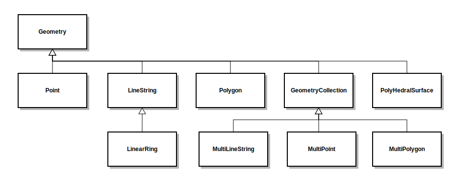

Support for Spatial queries is available via the Querydsl Spatial module, which is an extension module to the SQL module. The Spatial module supports the object model of Simple Feature Access in queries and object binding.
The geolatte project is used for the object model.
|  |
Add the following dependency to your Maven project:
<dependency>
<groupId>com.querydsl</groupId>
<artifactId>querydsl-sql-spatial</artifactId>
<version>${querydsl.version}</version>
</dependency>
Additionally the following database specific extra dependencies:
<!-- for PostgreSQL usage --> <dependency> <groupId>org.postgis</groupId> <artifactId>postgis-jdbc</artifactId> <version>1.3.3</version> <scope>provided</scope> </dependency> <!-- for Oracle usage --> <dependency> <groupId>oracle</groupId> <artifactId>sdoapi</artifactId> <version>11.2.0</version> <scope>provided</scope> </dependency>
The code generation for Querydsl SQL can be set to detect the usage of spatial types in database schemas and use geolatte types in these case via the spatial property:
<project>
<build>
<plugins>
...
<plugin>
<groupId>com.querydsl</groupId>
<artifactId>querydsl-maven-plugin</artifactId>
<version>${querydsl.version}</version>
...
<configuration>
...
<spatial>true</spatial>
</configuration>
</plugin>
...
</plugins>
</build>
</project>
The runtime configuration aspect of the spatial module is that instead of the normal SQLTemplates instances, spatial enabled instances are used. Below is a list of spatial enabled SQLTemplates classes.
GeoDBTemplates (for H2)
MySQLSpatialTemplates
OracleSpatialTemplates (alpha stage)
PostGISTemplates
SQLServer2008SpatialTemplates
TeradataSpatialTemplates
With code generation and runtime configuration set for spatial types we can now try queries with it.
Geometry point = Wkt.fromWkt("Point(2 2)");
query.where(table.geo.distance(point).lt(5.0));
In addition to straight distance between geometries spherical and spheroidal distance are provided via distanceSphere and distanceSpheroid.
Geometry point = Wkt.fromWkt("Point(2 2)");
query.where(table.geo.contains(point));
Unified access to the SPATIAL_REF_SYS standard table is provided via the QSpatialRefSys and SpatialRefSys classes. SPATIAL_REF_SYS contains data about the supported spatial reference systems.
QSpatialRefSys spatialRefSys = QSpatialRefSys.spatialRefSys; List<SpatialRefSys> referenceSystems = query.select(spatialRefSys).from(spatialRefSys).fetch();
In case you use only generic geometry types in your database schema you can use conversion methods in the object model to convert to more specific types.
GeometryPath<Geometry> geometry = shapes.geometry; PointPath<Point> point = geometry.asPoint(); NumberExpression<Double> pointX = point.x(); // x() is not available on GeometryExpression/GeometryPath